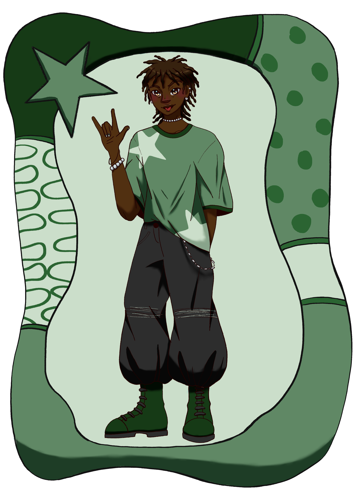

Quem é Noah?
Noah é aquele cara que é amigo de todo mundo, que não há alguém que não o ache minimamente legal. Ele é um garoto cheio de estilo, tanto que é um modelo para algumas linhas de roupa adolescênte, então ele recebe varias peças de presente das marcas, que algumas ele dá para seus amigos.
Ele age como o irmão mais velho para seu grupo de amigos, em que eles o adimiram por sua confiança. Principalmente Gabriella, sua amiga mais próxima, que ele cuida com muito carinho. Ela o aopiou muito durante sua transição de gênero, e por isso se importa muito com ela